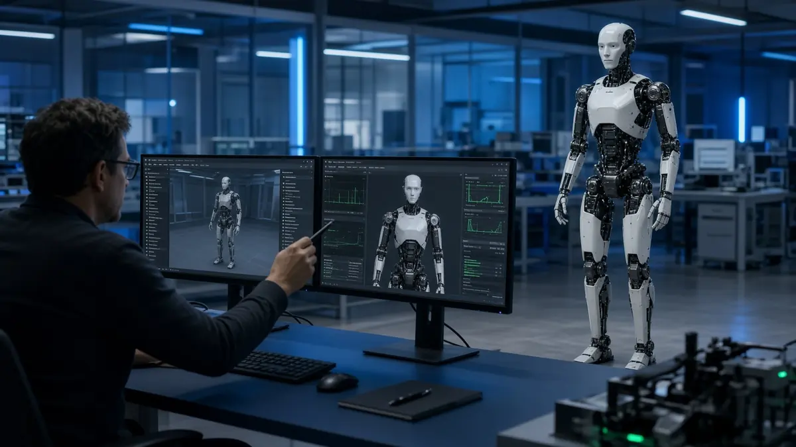

NVIDIA
NVIDIA expands Isaac robotics platform as Agile Robots unveils Agile ONE SN humanoid
Short answer: At GTC Berlin on 21 October 2026, NVIDIA announced additions to its Isaac robotics platform, and Agile Robots announced Agile ONE SN, a humanoid reference platform built on NVIDIA's Isaac GR00T software and Jetson Thor computer, according to NVIDIA's press release.
NVIDIA says the Agile ONE SN body stands 1.40 metres tall, weighs 40 kg and has 31 degrees of freedom, with two five-finger hands, head and wrist cameras, lidar and motion sensors. The companies say it is meant for humanoid research and development, scheduled to be available in early 2027, with planned integration of NVIDIA's Halos safety system. NVIDIA also claims the bundle cuts setup time "from weeks to days".

On the software side, NVIDIA says Isaac Lab 3.0 is now generally available and describes a new open-source Isaac OS runtime and a library of more than 2,000 simulation-ready robotics and factory assets.